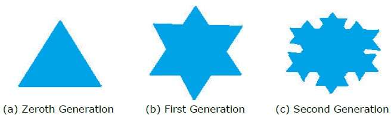
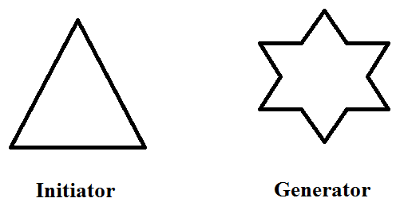
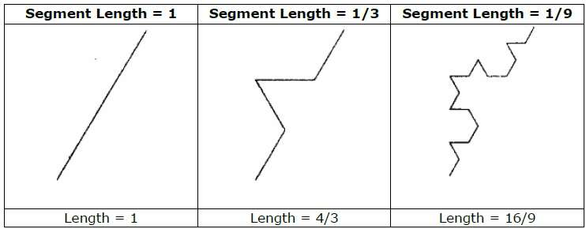

Fractals
Fractals are geometric patterns that is repeated at ever smaller scales to produce irregular shapes and surfaces that can not be represented by
classical geometryThey are created using iterations. This means one formula is repeated with slightly different values over and over again,
taking into account the results from the previous iteration.
Fractals are used in many areas such as-
- Astronomy − For analyzing galaxies, rings of Saturn, etc.
- Biology/Chemistry − For depicting bacteria cultures, Chemical reactions, human anatomy, molecules, plants.
- Others − For depicting clouds, coastline and borderlines, data compression,
diffusion, economy, fractal art, fractal music, landscapes, special effect, etc.
Generation of Fractals
Fractals can be generated by repeating the same shape over and over again as shown in the following figure.
In figure (a) shows an equilateral triangle. In figure (b), we can see that the triangle is repeated to create a star-like shape. In figure (c), we can see that the star shape in figure (b) is repeated again and again to create a new shape.
We can do unlimited number of iteration to create a desired shape. In programming terms, recursion is used to create such shapes.

Geometric Fractals
Geometric fractals deal with shapes found in nature that have non-integer or fractal dimensions.
To geometrically construct a deterministic (nonrandom) self-similar fractal, we start with a given geometric shape, called the initiator.
Subparts of the initiator are then replaced with a pattern, called the generator.

As an example, if we use the initiator and generator shown in the above figure, we can construct good pattern by repeating it.
Each straight-line segment in the initiator is replaced with four equal-length line segments at each step.
The scaling factor is 1/3, so the fractal dimension is D = ln 4/ln 3 = 1.2619.
Also, the length of each line segment in the initiator increases by a factor of 4/3 at each step,
so that the length of the fractal curve tends to infinity as more detail is added to the curve as shown in the following figure −
